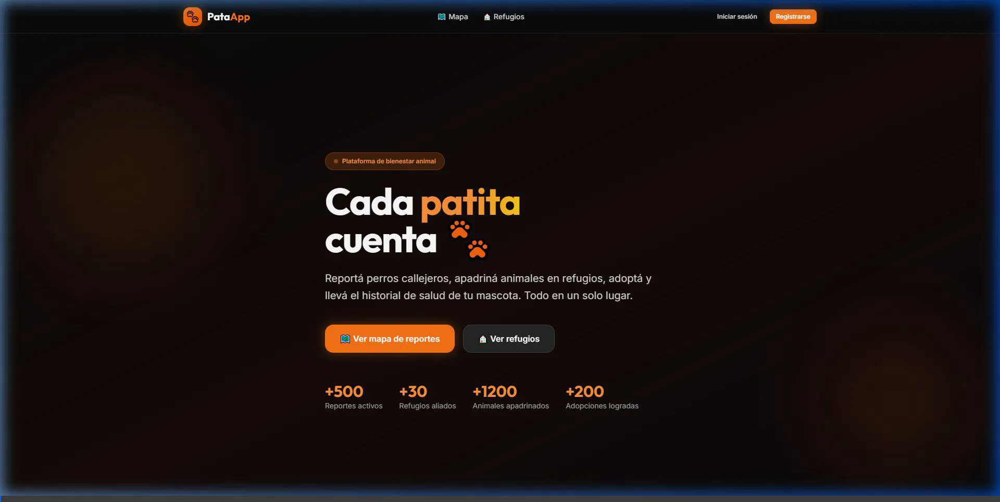

La revolución digital en la gestión de fauna urbana y salud pública.
Las ciudades de hoy enfrentan un problema crítico y fragmentado en la gestión de animales de la calle y zoonosis.
El ciudadano reporta, el municipio carece de trazabilidad y los refugios están sobrepasados administrativamente sin herramientas digitales modernas.
Animales callejeros sin control sanitario en la región
De los registros sanitarios se siguen haciendo en cuadernos manuales
Mapeo colectivo geolocalizado en tiempo real. Cualquier ciudadano avista un animal, sube una foto y reporta al instante.
Panel de control para monitorear zoonosis, ver reportes en tiempo real y derivar el rescate de forma inteligente a entidades locales.
Bandeja de entrada de rescates automatizada. Gestión de animales, historial de salud y captación de fondos en un solo software.

El ciudadano inicia sesión con su cuenta asignada para poder interactuar.
Navega a la sección de refugios y visualiza las mascotas listas para adopción.
Selecciona un perro (ej. Tobías) para conocer su ficha, tamaño, edad y estado de vacunas.
Puede iniciar la postulación para adopción o apadrinar de forma mensual recurrente.
Registra sus propias mascotas cargando foto, raza e historial clínico para generar su QR identificatorio.
Acceso al mapa general de incidencias donde se visualizan todos los perros reportados.
Los filtros dinámicos permiten aislar reportes según estén Avistados, En Rescate o Adoptados.
Haciendo clic sobre cualquier punto del mapa, se abre el formulario de registro autocompletando la latitud y longitud.
Ingreso al panel de control central para auditar la evolución de casos e incidencias municipales.
Control integral y verificación del padrón de usuarios, refugios y municipalidades en la red.
Cada mascota cuenta con una ficha técnica completa e historial de salud:
Un código QR para el collar que cualquier persona puede escanear en caso de extravío para conocer el estado clínico y datos de contacto de la mascota.
Los municipios pagan una mensualidad fija para acceder a:
Monetización cruzada de la comunidad:
Reducción de mordeduras y accidentes de tránsito urbanos mediante alertas sanitarias coordinadas.
Incremento en la tasa de adopción al ofrecer pasaportes QR médicos validados y digitalizados.
Menos carga administrativa manual en los refugios, permitiendo concentrar recursos en el cuidado animal.
Alianza inicial con un municipio seleccionado para implementar el mapa de reportes y capacitar a la red de refugios locales.
Distribución de las primeras 1,000 placas identificadoras QR en ferias de adopción municipales para captar usuarios ciudadanos y validar el software.
Te invitamos a ser parte del cambio en la infraestructura de salud urbana e impacto animal de la región.
Municipios
gobierno@pataapp.comRefugios
refugios@pataapp.comInversores
inversion@pataapp.com